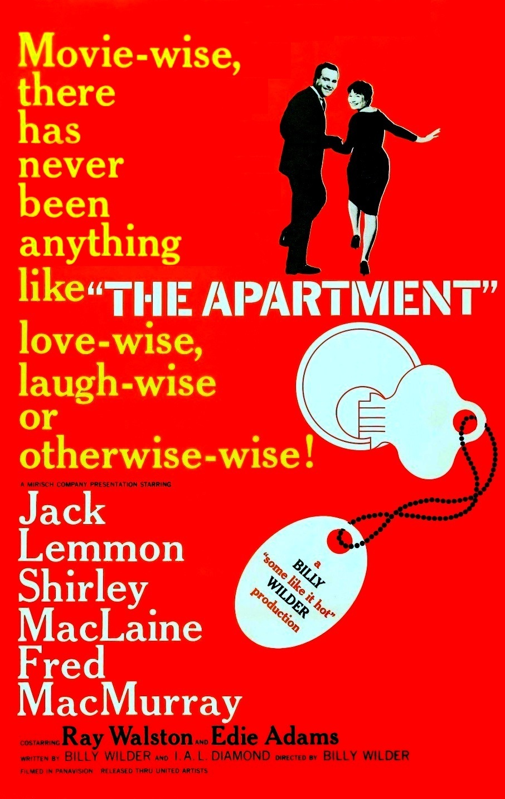

The Apartment
33rd Academy Awards
(Oscars 1961)
10 Nominations, 5 Awards
| Nominations | ||
|---|---|---|
| Category | Nominees | Result |
| Best Motion Picture | Billy Wilder | Won |
| Actor | Jack Lemmon | Nominated |
| Actress | Shirley MacLaine | Nominated |
| Actor in a Supporting Role | Jack Kruschen | Nominated |
| Directing | Billy Wilder | Won |
| Writing (Story and Screenplay--written directly for the screen) | Billy Wilder and I. A. L. Diamond | Won |
| Cinematography (Black-and-White) | Joseph LaShelle | Nominated |
| Film Editing | Daniel Mandell | Won |
| Art Direction (Black-and-White) | Alexander Trauner and Edward G. Boyle | Won |
| Sound | Gordon E. Sawyer | Nominated |